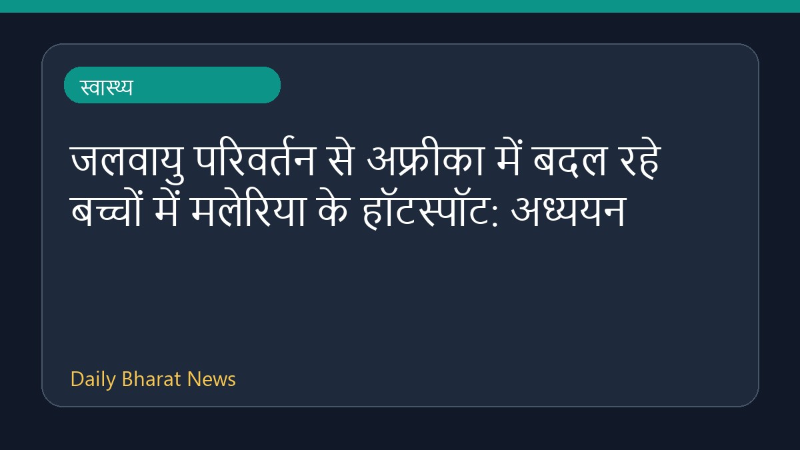

जलवायु परिवर्तन से अफ्रीका में बदल रहे बच्चों में मलेरिया के हॉटस्पॉट: अध्ययन

एक नए अध्ययन के अनुसार, जलवायु परिवर्तन के कारण अफ्रीका महाद्वीप में बच्चों के बीच मलेरिया के हॉटस्पॉट की स्थिति में बदलाव आ रहा है। डाउन टू अर्थ की इस रिपोर्ट में बताया गया है कि किस प्रकार पर्यावरणीय बदलाव इस गंभीर बीमारी के प्रसार को प्रभावित कर रहे हैं। इस संबंध में अधिक जानकारी सीमित है, क्योंकि आरएसएस विवरण में विस्तृत आंकड़े उपलब्ध नहीं कराए गए हैं। हालांकि, यह स्पष्ट होता है कि जलवायु परिस्थितियों का सीधा असर स्वास्थ्य संबंधी जोखिमों और बीमारियों के भौगोलिक वितरण पर पड़ रहा है, जिस पर वैज्ञानिकों और स्वास्थ्य विशेषज्ञों की नजर है।
मूल स्रोत: Health News Sources
Climate change is shifting childhood malaria hotspots across Africa, finds study - Down To Earth ↗
Climate change is shifting childhood malaria hotspots across Africa, finds study - Down To Earth ↗